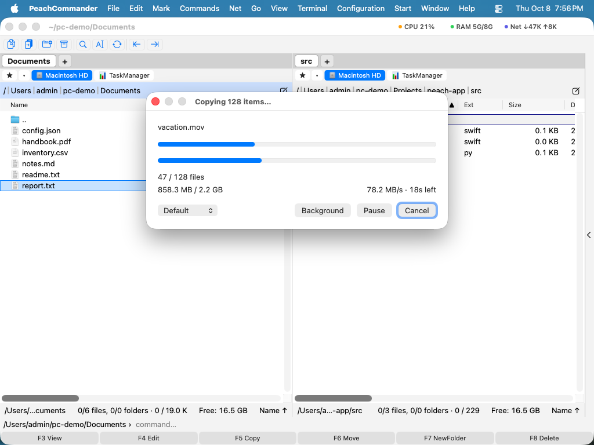

Kopírování souborů
Peach Commander je postaven kolem dvou panelů vedle sebe: jeden obsahuje soubory, se kterými pracujete, druhý je cíl. Kopírování vezme to, co je vybráno v aktivním panelu, a vloží kopii do složky zobrazené ve druhém panelu, přičemž originály ponechá na místě. Toto je nejrychlejší způsob, jak duplikovat soubory a složky mezi dvěma umístěními bez přetahování.
Zkopírování výběru do druhého panelu
- V jednom panelu otevřete složku, která obsahuje položky, jež chcete zkopírovat.
- Ve druhém panelu otevřete složku, kam mají kopie směřovat.
- Vyberte soubory a složky ke zkopírování. Pokud není nic vybráno, použije se položka pod kurzorem.
- Stiskněte F5. Otevře se dialog kopírování s již vyplněnou cílovou cestou.
 (Obrázek: Dialog kopírování. Cílová cesta míří na druhý panel; možnostmi vyladíte kopírování.)
(Obrázek: Dialog kopírování. Cílová cesta míří na druhý panel; možnostmi vyladíte kopírování.)
- V případě potřeby upravte cíl a poté potvrzením zahajte kopírování.
Možnosti kopírování
Než potvrdíte, můžete změnit chování kopírování:
- Pouze novější soubory — přeskočí každou položku, jejíž kopie již existuje a je stejně stará nebo novější, takže se aktualizují jen změněné soubory.
- Spustit na pozadí — předá kopírování správci přenosů na pozadí místo zobrazení okna průběhu.
- Zařadit do fronty na později — přidá kopírování do fronty na pozadí, aniž by je hned spustilo.
- Maska přejmenování — do cílového pole zadejte zástupný vzor (například
*.bak) k přejmenování položek při kopírování.
Dvě nastavení platí pro každé kopírování a najdete je v Konfigurace ▸ Nastavení… ▸ Kopírovat/odstranit: zachování dat, oprávnění a dalších atributů (ve výchozím nastavení zapnuto) a omezení rychlosti, aby rozsáhlé kopírování nezahltilo váš disk nebo síťové připojení. K úlohám ve frontě viz Přenosy na pozadí.
Průběh
Okno průběhu zobrazuje ukazatel celé úlohy s počty souborů a bajtů, přenosovou rychlostí a zbývajícím časem; když kopírování souboru trvá déle než chvilku, objeví se nad ním druhý ukazatel pro tento soubor. Kdykoli můžete kopírování pozastavit a pokračovat v něm. Nabídka rychlosti vedle tlačítek toto kopírování okamžitě omezí (1, 5 nebo 20 MB/s, nebo plná rychlost), aniž by se změnil limit v Konfiguraci; Výchozí se vrátí k tomuto limitu. Na pozadí předá běžící kopírování správci přenosů na pozadí: okno se zavře a kopírování pokračuje tam.

(Obrázek: Dialog průběhu zobrazený během kopírování nebo přesunu.)Řešení souborů, které již existují
Pokud by kopírování nahradilo existující soubor, Peach Commander se zastaví a zeptá se, co dělat. Náhled obou souborů vám pomůže rozhodnout se.
 (Obrázek: Dialog přepsání porovnává existující soubor s tím, který se kopíruje.)
(Obrázek: Dialog přepsání porovnává existující soubor s tím, který se kopíruje.)
Vaše možnosti zahrnují:
- Přepsat existující soubor nebo Přepsat vše k použití na každý zbývající konflikt.
- Přeskočit tento soubor nebo Přeskočit vše u zbývajících konfliktů.
- Přejmenovat příchozí kopii automaticky, aby byly zachovány oba soubory.
- Připojit příchozí data na konec existujícího souboru.
- Přepsat pouze tehdy, když je zdroj novější nebo větší než existující soubor.
Klávesové zkratky
| Akce | Klávesa |
|---|---|
| Zkopírovat výběr do druhého panelu | F5 |
| Zkopírovat ve stejné složce (vytvořit přejmenovanou kopii) | Shift+F5 |
| Otevřít správce přenosů na pozadí | Cmd+Shift+B |
Poznámky
- Kopírování mezi dvěma umístěními na stejném disku používá rychlé klonování, pokud jej disk podporuje, takže se velké soubory zkopírují téměř okamžitě a spotřebují málo místa navíc.
- Složky se kopírují se vším, co je uvnitř.
- Chcete-li soubory přesunout namísto zkopírování, použijte F6. Ke sledování nebo správě úloh ve frontě otevřete správce přenosů na pozadí pomocí Cmd+Shift+B.